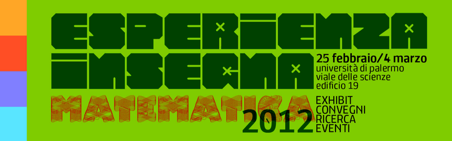
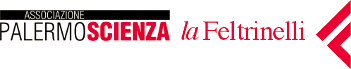
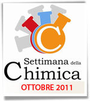

You are hereNews
News
Le ultime notizie di PalermoScienza
Esperienza inSegna in pillole, 26-02-2012
La mattinata è trascorsa tra laboratori, esposizioni e visite guidate. Sempre emozionante l'esibizione dell'orchestra della scuola secondaria di 1° grado Vittorio Emanuele III di Palermo che, guidata dalla professoressa Eliana Danzì, si è esibita durante l'interessante conferenza-spettacolo Cervello matematico - Cervello musicale a cura di Mario Ferreri e Eliana Danzì. L'orchestra ha accompagnato anche l'esibizione del Maestro di tango dell'Università di Buones Aires, Angel Fabian Coria, e della professoressa Claudia Sortino che, con bravura ed eleganza, hanno dimostrato come il tango abbia una stretta e soprendente connessione con il linguaggio matematico.
Alla prossima pillola!
Ecco la prima pillola di Esperienza inSegna 2012!
L'inaugurazione della quinta edizione si apre con un dibattito sul tema Un centro per la divulgazione scientifica a Palermo, poi si da il via alla "cura annuale" con medicine fatte di ottima matematica: exhibit, zuppe di numeri, tesori artistici, sorprendenti bolle "matematiche" che prendono "forma" nella conferenza Matematica trasparente. Superfici minime e bolle di sapone a cura di Italo Tamanini e alcuni brani tratti dalla conferenza-spettacolo Il Bolero di Ravel: la storia scientifica di un puzzle fisico-matematico, a cura di Luigi Dei che ci conduce nel mondo della musica attraverso il racconto scientifico.
Buona visione e a domani!
Gli spettacoli di Esperienza inSegna 2012
Anche quest'anno la manifestazione Esperienza inSegna proporrà una serie di appuntamenti dal taglio altamente multidisciplinare: rappresentazioni teatrali, spettacoli e conferenze-spettacolo che, partendo dall'analisi di una scienza antichissima come la matematica, ci faranno scoprire come essa sia una scienza sorprendente e attuale.
Tra questi:
Qui il calendario, e qui gli indirizzi utili per chiedere informazioni.
Vi aspettiamo :)
Al via la quinta edizione di Esperienza inSegna

Anche quest'anno l'Associazione PALERMOSCIENZA da il via alla manifestazione Esperienza inSegna, giunta alla sua quinta edizione. Dal 25 febbraio al 4 marzo la sede del Polididattico dell’Università di Palermo (Viale delle cienze, edificio 19) si trasformerà in un grande spazio espositivo aperto all'intera cittadinanza.
L'edizione di quest'anno è dedicata alla matematica: 41 scuole di ogni ordine e grado, l’Università di Palermo, il CNR, la Polizia Scientifica di Palermo e numerose associazioni ci accompagneranno in un viaggio incentrato su questa scienza e scandito dai numerosi appuntamenti dal taglio altamente multidisciplinare.
Tra conferenze e workshop, exhibit e laboratori, mostre e spettacoli sarà ripercorsa la storia della matematica, partendo dalle sue radici e ricordando la prestigiosa tradizione che la città di Palermo vanta con la nascita, nel 1884, del Circolo Matematico; sarà sottolineato l'importante ruolo svolto dalle donne nella scienza, il legame attuale tra ricerca e impresa, i risvolti che la matematica ha nella vita di ogni giorno, spaziando dalla musica alla cucina, alla percezione sensoriale di grande respiro... la matematica è davvero una scienza per tutti!
Da qui è possibile scaricare il depliant con tutte le informazioni sulla manifestazione.
Per poter partecipare alla manifestazione e a tutte le attività ad essa connesse previste nel calendario è necessario iscriversi.
Per informazioni e prenotazioni contattare uno di questi recapiti:
- email segreteria@palermoscienza.it;
-
tel 3668028227 o 3334612148 (dalle 9:00 alle 13:00 e dalle 15:00 alle 19:00).
Vi aspettiamo numerosi!
La chimica in famiglia presso la Feltrinelli di Palermo
L'Associazione PALERMOSCIENZA, in collaborazione con la Feltrinelli di Palermo, presenta il laboratorio La Chimica in famiglia.
Si avvicina il Natale e le mamme preparano deliziose torte per le feste. Alcune di queste sono decorate con Pasta Reale.. Quali segreti nasconde questo delizioso ingrediente goloso?
Domenica 27 novembre alle ore 11:00, presso la sede della Feltrinelli (via Cavour, 133), Giorgio Nasillo, chimico dell'Associazione PALERMOSCIENZA, ci spiegherà che cosa è lo zucchero, com’è fatto e da dove viene. Giocheremo con i colori e gli aromi per cibi, diventando così tutti alchimisti in cucina! Laboratorio, per genitori e figli di età compresa tra i 7 e gli 11 anni, a numero chiuso organizzato da PALERMOSCIENZA.
Prenotazioni entro venerdì 25 Novembre all’indirizzo email eventi.palermo@lafeltrinelli.it
Memoria scientiae 2012 – call for papers e informazioni
Anche quest'anno, nel mese di febbraio, la manifestazione Esperienza inSegna ospiterà il convegno Memoria Scientiae, giunto alla sua terza edizione. Le giornate di studio saranno improntate sul tema La matematica degli antichi e la scuola: testi, problemi e possibili percorsi didattici con l'obiettivo di “spingere il mondo della scuola e il mondo dell’università a un incontro, a una mediazione e, se possibile, a una progettazione comune sul versante dell’interdisciplinarità.”
Questo invito è rivolto a tutti i docenti interessati a partecipare a Memoria Scientiae in veste di relatori. Nel file seguente troverete tutte le informazioni dettagliate sull'evento e gli indirizzi utili da contattare: http://www.palermoscienza.it/system/files/memoria_scientiae_2012.pdf
Laboratori Aperti per la Giornata della Fisica
Riceviamo dal Prof. Aurelio Agliolo Gallitto e volentieri diffondiamo l'invito di partecipazione all'evento.
In occasione della XXI Settimana della Cultura Scientifica e Tecnologica, il Dipartimento di Fisica dell'Università di Palermo organizza giovedì 20 ottobre 2011 dalle ore 9 alle ore 18 la Giornata della Fisica con Laboratori Aperti.
Verranno illustrate le attività di ricerca scientifica svolte presso il Dipartimento e si potranno effettuare visite guidate presso i laboratori di ricerca di via Archirafi 36 e di viale delle Scienze Edificio 18 per visionare gli esperimenti in corso.
Le visite si svolgeranno sia nel plesso di Via Archirafi 36 sia nel plesso di Viale delle Scienze (Edificio 18).
Per informazioni e visite di scolaresche contattare:
- dott. S. Agnello E-mail simonpietro.agnello@unipa.it (Plesso di via Archirafi 36);
- dott. C. Fazio E-mail claudio.fazio@unipa.it (Plesso di Viale delle Scienze).
Da qui è possibile scaricare il programma della giornata e l'elenco dei laboratori aperti per le visite.
Vi aspettiamo!
PALERMOSCIENZA al Giardino Inglese: Chemi... cucini?
In occasione della settimana della Chimica, l’Associazione PALERMOSCIENZA organizza i "Laboratori Chemi.. cucini?" presso il Giardino Inglese di Palermo.
Sabato 22 ottobre dalle 15.30 alle 18.30 e domenica 23 ottobre dalle 10.00 alle 13.00.
Giovani, famiglie, studenti e tutti i cittadini sono invitati a trascorrere due giornate all'insegna della Chimica, per scoprire l'importanza di questa scienza nella nostra vita e saper riconoscerla in molte delle attività che svolgiamo giornalmente.
Un'occasione unica per fare chimica insieme e superare quei luoghi comuni che portano a considerarla come una disciplina da studiare esclusivamente sui libri.
Gli esperti di PALERMOSCIENZA guideranno i partecipanti nella realizzazione di divertenti e interessanti esperimenti di chimica in cucina:
- Il caviale di frutta ed il riconoscimento degli amidi - come riconoscere gli amidi negli alimenti di cui ci nutriamo?
- Il latte come fonte di plastica e di colla - un interessante laboratorio per scoprire come produrre una colla usando del semplice latte!
Temi ricchi di spunti di riflessione e capaci di incuriosire anche un pubblico giovane e di “non addetti ai lavori”.
Certi che accoglierete il nostro invito con grande entusiasmo vi aspettiamo numerosi al Giardino Inglese!
Matefitness: i segreti della matematica presso laFeltrinelli di Palermo
L'Associazione PALERMOSCIENZA, in collaborazione con laFeltrinelli di Palermo, presenta Matefitness®:
Ma siamo così sicuri che la matematica sia noiosa e che non racchiuda in sé un po' di magia?
Domenica 9 ottobre alle ore 11.00, presso la sede della Feltrinelli (via Cavour, 133), insieme agli esperti di PALERMOSCIENZA, scopriremo i segreti su come disporre degli oggetti in uno spazio in cui non penseremmo mai di introdurli; proveremo ad “ammanettare” con delle corde i partecipanti per vedere se saranno in grado di liberarsi; sfideremo infine i nostri amici in giochi di illusione… ma cosa c’entra tutto questo con la matematica?
Il laboratorio è pensato per famiglie con bambini di età compresa tra i 5 e i 9 anni ed è a numero chiuso. Le prenotazioni devono essere fatte entro venerdì 7 ottobre contattando laFeltrinelli al seguente indirizzo email: eventi.palermo@lafeltrinelli.it
Matefitness è un progetto del CNR-PSC, ideato da Manuela Arata (Dirigente ufficio PSC), Giuseppe Rosolini (ordinario di logica matematica presso Università degli Studi di Genova) e Giovanni Filocamo (tecnologo e comunicatore scientifico), nato da una collaborazione con l’Università di Genova e Palazzo Ducale. MateFitness®opera sul territorio nazionale partecipando a festival culturali e realizzando progetti di divulgazione, formazione e didattica creativa della matematica. La palestra della matematica è sita a Genova ed è uno spazio permanente a disposizione di pubblico e scuole, dove “allenare la mente” attraverso oltre 300 attività matematiche ludico-interattive.

La fotocronaca di Un Mare di Scienza
In attesa della seconda fase di Mare di Scienza, ecco una carrellata delle attività svolte in alcuni giorni di laboratorio, fotocronache in musica per rivedere e rivedersi, per sfogliare con la memoria quanto imparato divertendosi, insieme ad altri piccoli compagni d'avventura e guidati dagli esperti di PALERMOSCIENZA.
Matematica, Chimica, Fisica, Astronomia, Biologia, Ambiente e Geologia: le discipline scientifiche rivisitate anche attraverso i loro punti di contatto, tra sperimentazione, gioco e riflessione, negli ampi spazi di Villa Filippina.
Buona visione!